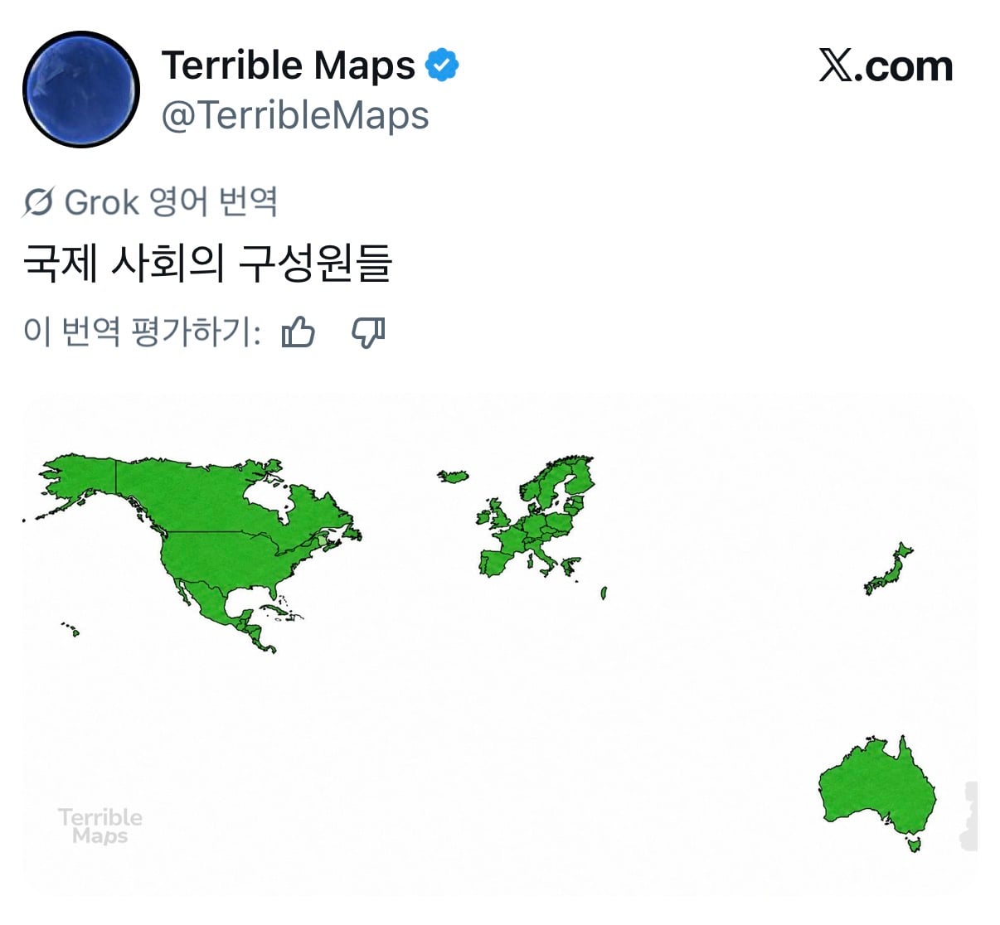

이 새끼 100% 멕시코인임
댓글
kpop 이전에는 존재도 잘 몰랐을텐데
쟤들 교육수준은 한국이랑 비교 불가임
아니면 그리스인일지도. 발칸반도 그리스만 냄겨놨네ㅋㅋ
일반적으로 이미지 안 좋은 동유럽이라 다 버린 듯?
그리스는 동유럽으로 안 치니까 남겨두고
위쪽도 슬로바키아/발트3국까지만 남겨두고
그리고 북아메리카 통째로(파나마까지) 남겨뒀는데
아시안은 100%(일본 제외) 말살해버린 걸 보면...
의외로 일본?
미국 아래 붙어있는건 51번째 주인가요?
도람프도 저긴 얘기도 안 꺼내잖음
그만큼 노답인 동네임
마약 카르텔이 정부 대신인 곳이 많으니
멕시코 한창 축구할때 우리나라 형제국이라매 왜 형제국을빼?
멕시코면 자기 주변 국가는 알텐데 저런 지도에서 쿠바를 포함시킬거 같지는 않음
인도 중국 한국 없이 세계 경제 돌아가냐?
인도는 없어도 세계경제에 그렇게 치명타는 아니지않나... 시장이 사라지니 단기간 충격은 당연히 있겠지만 대외적으로 엄청난 영향력인가하면 모르겠네 시간지나면 대체 가능한 정도일듯
경제 규모로 보면 3~5위권이라 엄청 크긴 해
그거 그냥 내수 인구빨이지 세계 경제에선 뭐 그닥 인도로 수출하는 기업들은 타격 좀 있겠지만 그게 대체불가냐?하면 아닌듯
중국도 내수 인구빨인데 인도보다 3~5배정도인거지
근데 그게 말도 안 되게 큰 거임
중국은 공산품 전세계에 싸게 팔아먹으면서 경제 지탱시키는게 인도랑은 비교도 안되는데요... 너 당장 인도 수출품 생각나는거 얼마나 있고 쓸 의향있는거 뭐 있음. 내수규모가 큰거랑 세계 전반에 끼치는 영향은 다른거지. 인도 없으면 기업들은 좀 무너질지라도 그게 전세계적 대체불가급 경제붕괴를 불러온다? 그건 아닌거같음 암만봐도. 인도는 그 규모에 수출액이 한국보다도 적은 나라임
3~5배만큼 차이가 나겠지(이거 해외 매출/수입 기준이야)
그게 적은 거냐고 하면 적지 않다, 여기까지가 내가 적은 내용이고
'실제로 경제 규모는 3~5위급으로 크다'가 처음 한 말임
그 영향이 당연히 적을 수가 없다는거고
단기적인지 장기적인지, 대체불가니, 치명타니
이건 니가 추가한 말이지 내가 한 말도 아니고 처음 애가 한 말도 아니고...
인구 20분의 1인 한국보다 약간 낮은 건 맞지만 '인도 중국 한국'으로 묶을 때 넣을 정도는 되는 거지
인도가 식량 존나 수출할걸
인도없으면 유튜브에 튜토리얼 영상 90프로 사라진다…
아이슬란드놈아니냐
이렇게보니까 극동아긴 하구나
멕시코 아닌거 같음
중미쪽 도미니카 등 집어 넣은 거 보면
쿠바도 있누
아이슬란드인 아닐까
슬로바키아 리투아니아도 있는데 중국 인도 한국이 없어? ㅋㅋㅋㅋ
그냥 유럽, 북미 표현하고 싶었을 뿐인듯
중국 러시아가 없는데 쿠바는 있고 그냥 잘 모르는놈이 대충 만들었네ㅋㅋ
씹시코 껴있는거 개같잖네 ㅋㅋ 선진국 애들 즐길 마약 공급처라 중요하다 생각하나?
맞아, 국제사회 리더의 책무는 멕시코가 다 책임질거니까 걱정마.
잘 부탁한다ㅋㅋ
밤8시 이후 나가지도 못하는 새키들이 ㅋㅋㅋㅋㅋㅋ
걍 빡대가리라서 맥시코 아래로 주렁주렁 다 미국으로 알고있는거 같은데
아무리 봐도 중국, 인도 뺀건 좀 ㅂㅅ같음
멕시코는 우리나라 좋아한다던데 왜 빠졌냐